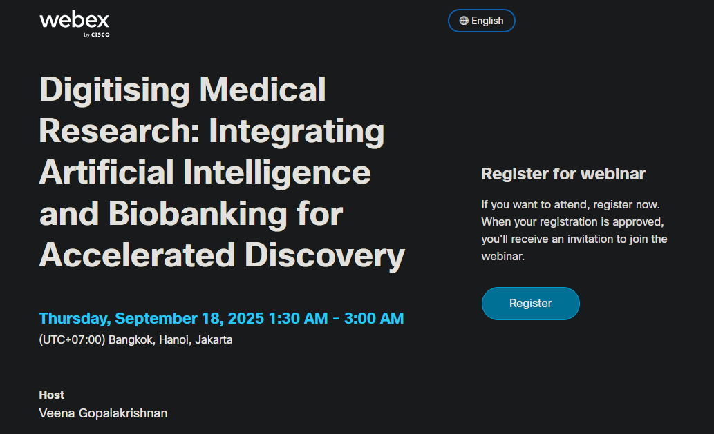

HỘI THẢO QUỐC TẾ
SỐ HÓA NGHIÊN CỨU Y HỌC: TÍCH HỢP TRÍ TUỆ NHÂN TẠO VÀ NGÂN HÀNG SINH HỌC NHẰM ĐẨY NHANH KHÁM PHÁ
Đăng ký ngay1. Tóm tắt
Sự phát triển mạnh mẽ của quá trình số hóa đang định hình lại nghiên cứu y học, từ khâu tạo lập, lưu trữ, phân tích đến ứng dụng dữ liệu vào thực hành lâm sàng. Trọng tâm của xu hướng này là sự kết hợp giữa trí tuệ nhân tạo (AI) và ngân hàng sinh học hiện đại (Biobank), mở ra cơ hội phát triển nghiên cứu khoa học và cải thiện chất lượng chăm sóc sức khỏe.
Ngân hàng sinh học ngày nay không chỉ lưu trữ mẫu vật lý mà còn tích hợp hệ thống dữ liệu đa dạng: lâm sàng, hệ gen, hình ảnh và lối sống. Khi được chuẩn hóa và liên kết, các dữ liệu này trở thành nền tảng cho phân tích AI nâng cao, có thể xác định chỉ dấu dự báo, mô hình tiến triển bệnh và hỗ trợ y học cá thể hóa.
Bên cạnh tiềm năng to lớn, việc ứng dụng AI và số hóa ngân hàng sinh học đặt ra các yêu cầu cấp thiết về quản trị, đạo đức, pháp lý và xã hội, nhằm bảo đảm quyền riêng tư, công bằng và niềm tin trong nghiên cứu. Bài trình bày này sẽ cung cấp một cái nhìn tổng quan về kinh nghiệm thực tiễn từ ngân hàng sinh học IARC/WHO, các dự án hiện tại và định hướng trong tương lai.
Việc tích hợp AI với ngân hàng sinh học số hóa báo hiệu một bước chuyển đổi mô hình quan trọng trong khoa học y sinh, hứa hẹn mang lại khả năng phân tích dữ liệu nhanh chóng, chính xác và hiệu quả hơn trước những thách thức khoa học phức tạp.

2. Thông tin về hội thảo
Chuỗi hội thảo do đơn vị Nghiên cứu Ngân hàng sinh học và Mẫu sinh học (BBRB), Viện Ung thư Quốc gia Hoa Kỳ (NCI) tổ chức, nhằm thảo luận các chủ đề hiện tại trong khoa học, chính sách và hoạt động ngân hàng sinh học. Trong kỷ nguyên y học chính xác, các mẫu sinh học chất lượng cao đóng vai trò trung tâm trong việc hiểu các bệnh phức tạp, phát hiện dấu ấn sinh học, và làm sáng tỏ các cơ chế kháng trị liệu. Chuỗi hội thảo hướng tới tương lai, tập trung vào việc nâng cao nhận thức về thực hành tốt nhất trong thu thập mẫu sinh học và dữ liệu liên quan, đồng thời mở rộng sự tham gia nghiên cứu thông qua ngân hàng sinh học.
- Thời gian: Thứ Năm, 18/9/2025 | 1:30 – 3:00 sáng
- Múi giờ: (UTC+07:00) Bangkok, Hà Nội, Jakarta
- Chủ trì: TS. Veena Gopalakrishnan
- Hình thức: Trực tiếp và trực tuyến (Người tham gia phải đăng ký bằng liên kết WebEx trước cuộc họp.)
- Ngôn ngữ trình bày: Tiếng Anh
- Lệ phí tham dự: Miễn phí
Sự kiện diễn ra sau:
3. Hình thức đăng ký
Link đăng ký: https://cbiit.webex.com/webappng/sites/cbiit/meeting/register/...
BIODAS chia sẻ thông tin tham gia hội thảo trực tuyến về chủ đề “Ngân hàng sinh học cho Y học cá thể hóa”, do Viện Ung thư Quốc gia Hoa Kỳ (NCI) tổ chức.
- Hướng đến đối tượng: Các nhà nghiên cứu, bác sĩ, giảng viên, học viên và những ai quan tâm đến lĩnh vực ngân hàng sinh học và y học chính xác.
- Khuyến nghị: Các đồng nghiệp, giảng viên và nghiên cứu viên trong lĩnh vực y sinh học nên tham gia để cập nhật kiến thức, học hỏi kinh nghiệm quốc tế và kết nối chuyên môn.
Hãy đồng hành cùng BIODAS trong buổi chia sẻ về chủ đề “Ngân hàng sinh học cho Y học cá thể hóa”, để cùng tìm hiểu vai trò của mẫu sinh học chất lượng cao trong nghiên cứu và ứng dụng y học chính xác.
Note: Hội thảo sẽ diễn ra từ 1h00 – 3h00 sáng theo giờ Việt Nam. BIODAS khuyến nghị các đồng nghiệp tại Việt Nam chủ động sắp xếp thời gian và chuẩn bị sức khỏe, bảo đảm sự tỉnh táo để có thể tham dự buổi hội thảo.